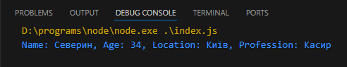

Добуток через карування
Створити функцію для розрахунку добутку двох чисел, що викликається так: name(5)(2). Функція повинна повертати результат (у середині функції не має бути консоль лога!)
Скрипт:
function multiply(a) {
return function(b) {
return a * b;
};
}
console.log(multiply(5)(2));
console.log(multiply(3)(4));
Результат:

Посилання на репозиторій github.com
Посилання на гілку на github.com